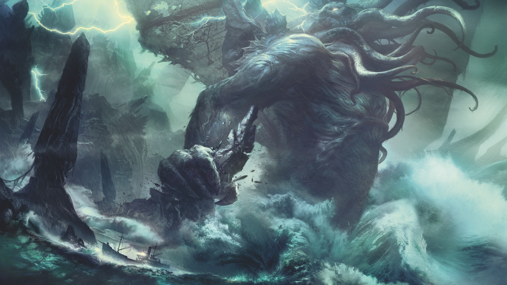
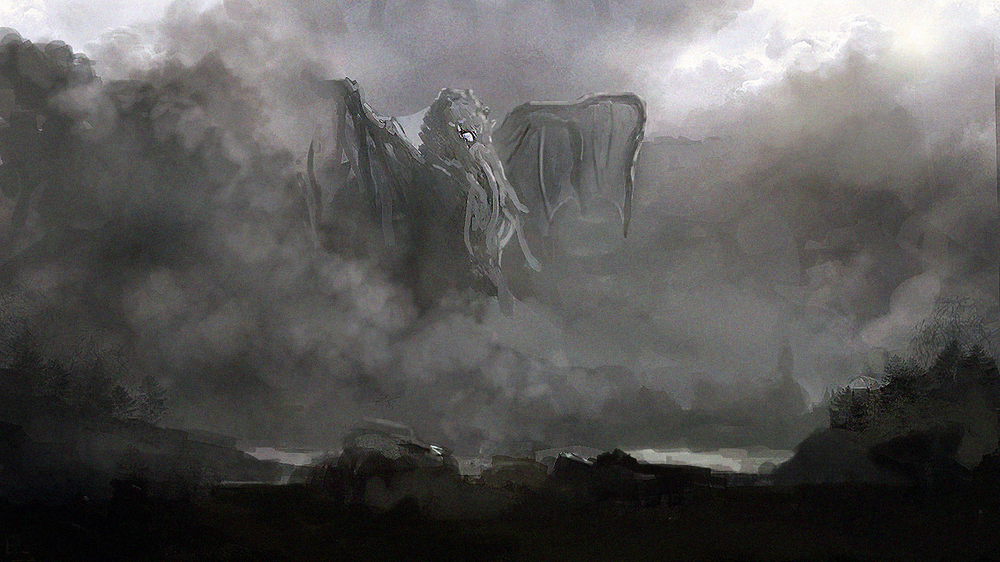

" In his house at R'lyeh, dead Cthulhu waits dreaming. "
- H.P. Lovecraft, The Call of Cthulhu
Cthulhu is a Great Old One of great power that lies in a death-like slumber beneath the Pacific Ocean in his sunken city of R'lyeh . He remains a dominant presence in the eldrich dealings on our world.
First mentioned by Lovecraft in 1928, the name Cthulhu is probably derived from the word chthonic, derived from Classical Greek, meaning "subterranean", as apparently suggested by Lovecraft himself at the end of his 1923 tale "The Rats in the Walls". Lovecraft transcribed the pronunciation of Cthulhu as Khlûl′-hloo and said that "the first syllable pronounced gutturally and very thickly. The u is about like that in full; and the first syllable is not unlike klul in sound, hence the h represents the guttural thickness". S. T. Joshi points out, however, that Lovecraft gave several differing pronunciations on different occasions. According to Lovecraft, this is merely the closest that the human vocal apparatus can come to reproducing the syllables of an alien language. Cthulhu has also been spelled in many other ways, including Tulu, Katulu and Kutulu. The name is often preceded by the epithet Great, Dead, or Dread. Long after Lovecraft's death, the spelling pronunciation /kəˈθuːluː/ became common. Others use the pronunciation Katulu/Kutulu /kəˈtuːluː/.
Description
In "The Call of Cthulhu", H. P. Lovecraft describes a statue of Cthulhu as "A monster of vaguely anthropoid outline, but with an octopus-like head whose face was a mass of feelers, a scaly, rubbery-looking body, prodigious claws on hind and fore feet, and long, narrow wings behind". Cthulhu has been described in appearance as resembling an octopus, a dragon and a human caricature, hundreds of meters tall, with webbed human-looking arms and legs and a pair of rudimentary wings on its back. Cthulhu's head is depicted as similar to the entirety of a gigantic octopus, with an unknown number of tentacles surrounding its supposed mouth. Cthulhu possibly could have the ability to make people lose their minds by visual contact with the entity.
His Worshippers
It is unknown how large the throng of those who worship the dreaded Cthulhu is, but his cult has many cells around the globe. The cult is noted for chanting its horrid phrase or ritual: "Ph'nglui mglw'nafh Cthulhu R'lyeh wgah'nagl fhtagn", which translates as "In his house at R'lyeh dead C'thulhu waits dreaming". This is often shortened to "Cthulhu fhtagn", which might possibly mean "Cthulhu waits", "Cthulhu dreams", or "Cthulhu waits dreaming".
Other Discoveries
Cthulhu is mentioned in other sources, sometimes described in ways that appear to contradict information given the most well-known accounts. For example, rather than including Cthulhu among the Great Old Ones, a quotation from the Necronomicon says of the Old Ones, "Great Cthulhu is Their cousin, yet can it spy Them only dimly". But different Lovecraft stories and characters use the term "Old Ones" in widely different ways. Human explorers in Antarctica discovered an ancient city, for example, where the Old Ones are described as a species of extraterrestrials, also known as Elder Things, who were at war with Cthulhu and his relatives or allies. The discoverers of the Elder Things were able to puzzle out a history from sculptural records:
"With the upheaval of new land in the South Pacific tremendous events began [...]. Another race–a land race of beings shaped like octopi and probably corresponding to the fabulous pre-human spawn of Cthulhu–soon began filtering down from cosmic infinity and precipitated a monstrous war which for a time drove the Old Ones wholly back to the sea [...]. Later peace was made, and the new lands were given to the Cthulhu spawn whilst the Old Ones held the sea and the older lands [...]. The antarctic remained the centre of the Old Ones' civilization, and all the discoverable cities built there by the Cthulhu spawn were blotted out. Then suddenly the lands of the Pacific sank again, taking with them the frightful stone city of R'lyeh and all the cosmic octopi, so that the Old Ones were once again supreme on the planet."
- H.P. Lovecraft, At the Mountains of Madness
William Dyer, part of the Antarctic expedition, also notes that "the Cthulhu spawn [...]. seem to have been composed of matter more widely different from that which we know than was the substance of the Antarctic Old Ones. They were able to undergo transformations and reintegrations impossible for their adversaries, and seem therefore to have originally come from even remoter gulfs of cosmic space [...]. The first sources of the other beings can only be guessed at with bated breath". He notes, however, that "the Old Ones might have invented a cosmic framework to account for their occasional defeats". Other stories have the Elder Things' enemies repeat this cosmic framework.
In another account, (HPL: "The Whisperer in Darkness") there is a reference to "the fearful myths antedating the coming of man to the earth–the Yog-Sothoth and Cthulhu cycles–which are hinted at in the Necronomicon". That suggests that Cthulhu is one of the entities worshiped by the alien Mi-go race, and repeats the Elder Things' claim that the Mi-go share his unknown material compositions. Cthulhu's advent is also connected, in some unknown fashion, with supernovae: "I learned whence Cthulhu first came, and why half the great temporary stars of history had flared forth". The story mentions in passing that some humans call the Mi-Go "the old ones". Investigations into the cult activity in Innsmouth, Massachusetts has revealed that Cthulhu is also worshiped by the nonhuman creatures known as Deep Ones.
Gallery


Become a priest of the Cthulhu church!
Become a LEGALLY ORDAINED PRIEST OR PRIESTESS OF CTHULHU!!